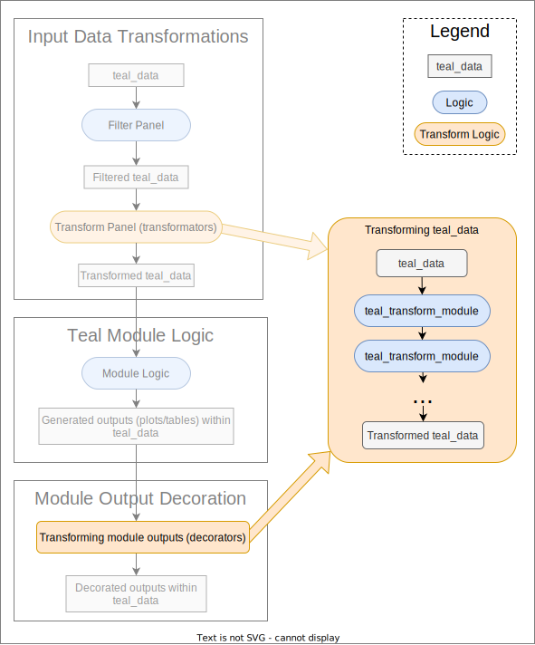

Transform Module Output
NEST CoreDev
Source:vignettes/transform-module-output.Rmd
transform-module-output.RmdIntroduction
The outputs produced by teal modules, like graphs or
tables, are created by the module developer and look a certain way. It
is hard to design an output that will satisfy every possible user, so
the form of the output should be considered a default value that can be
customized. In Transform Input
Data we described how teal_module’s input data can be
modified using teal_transform_module. Here we present how
to utilize teal_transform_module to modify an output
created by a teal_module, enabling you to tailor outputs to
your specific requirements without rewriting the original module
code.

How to Transform outputs?
Custom transformations for the output objects can be created with
teal_transform_module() and thus they are
shiny modules. They are passed to teal_module
constructors as arguments (see below). Their server logic will be used
to modify objects such as plots or tables that exist in the server
function of a teal_module. A ui function can
provide interactivity but that is optional, an app developer is free to
transform outputs objects of a teal module that do not
require user input.
Requirements and Limitations
Transforming teal module output requires the
following:
-
Module Support:
tealwill apply transformations toteal_moduleoutputs, but the module in question must explicitly support this functionality. It is the responsibility of to the module developer to accept and consume the list ofteal_transform_module. -
Matching Object Names:
Transformations have to reference variables that already exist in theteal_moduleserver function and therefore must use the appropriate variable names. Think of it as extending the plot/table code that already exists in the module. Module developers are encouraged to provide the relevant names in the module’s documentation, otherwise the person writing the output transformation must follow the source code. -
Maintaining Object Classes:
A transformation must not alter the class of the object that it modifies. This is because a different class may require a different rendering function and that is part of the module structure, which beyond the control of decorators. If change of this magnitude is required, it is recommended to create a new module.
Building Output Transformations (Decorators)
For simplicity, we will refer to the output transformers as decorators in the code examples below.
Server
Here we create a simple transformator that does not provide any user
input. Knowing that the module contains an object of class
ggplot2 named plot, we will modify its title
and x-axis title:
static_decorator <- teal_transform_module(
label = "Static decorator",
server = function(id, data) {
moduleServer(id, function(input, output, session) {
reactive({
req(data())
within(data(), {
plot <- plot +
ggtitle("This is a better title") +
xlab("the real x axis")
})
})
})
}
)UI
If the transformation requires a user input, a ui
function can be added. Here, the x-axis title is obtained from a
textInput widget, giving the user some flexibility. Note
how the input values are passed to the within() function
using its ... argument. See
?teal.code::within.qenv for more examples.
interactive_decorator <- teal_transform_module(
label = "Interactive decorator",
ui = function(id) {
ns <- NS(id)
div(
textInput(ns("x_axis_title"), "X axis title", value = "the suggested x axis")
)
},
server = function(id, data) {
moduleServer(id, function(input, output, session) {
reactive({
req(data())
within(data(),
{
plot <- plot +
ggtitle("This is a better title") +
xlab(my_title)
},
my_title = input$x_axis_title
)
})
})
}
)Variable Names as Arguments
The server function of a transforming
teal_transform_module must conform to the names of the
variables that exist in the server function of the transformed
teal_module. Writing a universal transformator that applies
to any module is impossible because different modules may use different
variable names for their output elements. It is possible, however, to
create a transformator that will take the relevant variable names as
arguments. Here, the output_name variable name is passed to
a transformator, allowing it to work with multiple modules.
dynamic_decorator <- function(output_name) {
teal_transform_module(
label = "Dynamic decorator",
ui = function(id) {
ns <- NS(id)
div(
textInput(ns("x_axis_title"), "X axis title", value = "the syggested x axis")
)
},
server = function(id, data) {
moduleServer(id, function(input, output, session) {
reactive({
req(data())
within(data(),
{
output_name <- output_name +
xlab(x_axis_title)
},
output_name = as.name(output_name),
x_axis_title = input$x_axis_title
)
})
})
}
)
}Note that when the function is used, output_name will be
passed a character string but the expression passed to
within needs a name/symbol, a
language object, hence the argument value must be converted to a
name.
Using Output Transformations (Decorators)
Transformations are applied to a teal module as
follows:
- A list of transformations is passed to the module constructor
function (e.g.
tm_my_module). - The module constructor calls the module generator function
(
teal::module) and passes the transformations to theui_argsandserver_argsarguments. - The module functions, UI and server, take a list of transformations
as arguments and resolve them using
ui_transform_teal_dataandsrv_transform_teal_data, respectively.
Here is a minimal illustration:
# styler: off
pseudo_decorated_module <- function(
label = "Pseudo Module with Decorator Support",
decorators = list() # <--- added block (1)
) {
module(
label = label,
ui_args = list(decorators = decorators), # <--- added block (2)
server_args = list(decorators = decorators), # <--- added block (2)
ui = function(id, decorators) {
ns <- NS(id)
div(
# <input widgets>,
# <output widgets>,
ui_transform_teal_data(ns("decorate"), transformators = decorators) # <--- added block (3)
)
},
server = function(id, data, decorators) {
moduleServer(id, function(input, output, session) {
# <receive inputs>
# <process data>
data_with_output <- reactive({
within(data(), output_item <- generate_output())
})
data_with_output_decorated <- srv_transform_teal_data( # <--- added block (3)
"decorate", # <-
data = data_with_output, # <-
transformators = decorators # <-
) # <--- added block (3)
# <render output>
})
}
)
}
# styler: onThe following examples demonstrate various uses of output transformations.
Single Transformation (Decoration)
In the first example we will apply one transformation to one output.
Module
This module has one output, a plot created with ggplot2,
and it displays the reproducible code used to obtain the plot.
tm_decorated_plot <- function(label = "module", decorators = list()) {
checkmate::assert_list(decorators, "teal_transform_module", null.ok = TRUE)
module(
label = label,
ui_args = list(decorators = decorators),
server_args = list(decorators = decorators),
ui = function(id, decorators) {
ns <- NS(id)
div(
selectInput(ns("dataname"), label = "select dataname", choices = NULL),
selectInput(ns("x"), label = "select x", choices = NULL),
selectInput(ns("y"), label = "select y", choices = NULL),
ui_transform_teal_data(ns("decorate"), transformators = decorators),
plotOutput(ns("plot")),
verbatimTextOutput(ns("text"))
)
},
server = function(id, data, decorators) {
moduleServer(id, function(input, output, session) {
observeEvent(data(), {
updateSelectInput(inputId = "dataname", choices = names(data()))
})
observeEvent(input$dataname, {
req(input$dataname)
updateSelectInput(inputId = "x", choices = colnames(data()[[input$dataname]]))
updateSelectInput(inputId = "y", choices = colnames(data()[[input$dataname]]))
})
dataname <- reactive(req(input$dataname))
x <- reactive({
req(input$x, input$x %in% colnames(data()[[dataname()]]))
input$x
})
y <- reactive({
req(input$y, input$y %in% colnames(data()[[dataname()]]))
input$y
})
# Plot is created within the teal_data object
data_with_plot <- reactive({
req(dataname(), x(), y())
within(data(),
{
plot <- ggplot2::ggplot(dataname, ggplot2::aes(x = x, y = y)) +
ggplot2::geom_point()
},
dataname = as.name(dataname()),
x = as.name(x()),
y = as.name(y())
)
})
# Decorators are applied
data_with_plot_decorated <- srv_transform_teal_data(
"decorate",
data = data_with_plot,
transformators = decorators
)
# (Decorated) plot object is extracted for rendering
plot_r <- reactive({
data_with_plot_decorated()[["plot"]]
})
# Add plot printing statement to reproducible code
## This does not affect the analysis but when the code is "replayed"
## in an interactive session it will send the plot to a graphics device.
reproducible_code <- reactive({
within(data_with_plot_decorated(), expr = plot) |>
teal.code::get_code()
})
output$plot <- renderPlot(plot_r())
output$text <- renderText(reproducible_code())
})
}
)
}Application
Note that every call to the module constructor
(tm_decorated_plot) takes a list containing one
transformator.
app <- init(
data = teal_data(iris = iris, mtcars = mtcars),
modules = modules(
tm_decorated_plot("undecorated"),
tm_decorated_plot("static", decorators = list(static_decorator)),
tm_decorated_plot("interactive", decorators = list(interactive_decorator)),
tm_decorated_plot("dynamic", decorators = list(dynamic_decorator("plot")))
)
)
if (interactive()) {
shinyApp(app$ui, app$server)
}Transforming Multiple Outputs (Decorators)
Here we will apply transformation to two outputs in one module.
Transformators
The plot transformators adds a user-provided title to a
ggplot2 object.
plot_decorator <- teal_transform_module(
label = "Decorate plot",
ui = function(id) {
ns <- NS(id)
textInput(ns("plot_title"), "Plot Title", value = "Title (editable)")
},
server = function(id, data) {
moduleServer(id, function(input, output, session) {
reactive({
req(data())
within(data(),
{
plot <- plot + ggplot2::ggtitle(ptitle) +
ggplot2::theme_minimal() +
ggplot2::theme(
plot.title = element_text(face = "bold", size = 30, color = "blue")
)
},
ptitle = input$plot_title
)
})
})
}
)The table transformators adds a column to a
data.frame.
table_decorator <- teal_transform_module(
label = "Decorate table",
ui = function(id) shiny::tags$p("No UI needed for table decorator and could be ommited."),
server = function(id, data) {
moduleServer(id, function(input, output, session) {
reactive({
req(data())
within(data(), {
table_data[["Added by decorator"]] <- paste0("Row ", seq_len(nrow(table_data)))
})
})
})
}
)Module
The following module uses ggplot2 to generate a scatter
plot, and presents a simple data.frame as a summary table.
Code for both outputs is also displayed.
Note that the module constructor accepts one list of transformations and the transformations are then manually separated in the module functions.
tm_decorated_plot_table <- function(label = "module with two outputs", decorators = list()) {
checkmate::assert_list(decorators, "teal_transform_module", null.ok = TRUE)
module(
label = label,
ui_args = list(decorators = decorators),
server_args = list(decorators = decorators),
ui = function(id, decorators) {
ns <- NS(id)
div(
selectInput(ns("dataname"), label = "Select dataset", choices = NULL),
selectInput(ns("x"), label = "Select x-axis", choices = NULL),
selectInput(ns("y"), label = "Select y-axis", choices = NULL),
# Separately inject UI for plot and table decorators
ui_transform_teal_data(ns("decorate_plot"), transformators = decorators$plot),
ui_transform_teal_data(ns("decorate_table"), transformators = decorators$table),
plotOutput(ns("plot")),
tableOutput(ns("table")),
verbatimTextOutput(ns("text"))
)
},
server = function(id, data, decorators) {
moduleServer(id, function(input, output, session) {
observeEvent(data(), {
updateSelectInput(inputId = "dataname", choices = names(data()))
})
dataname <- reactive(req(input$dataname))
observeEvent(dataname(), {
updateSelectInput(inputId = "x", choices = colnames(data()[[input$dataname]]))
updateSelectInput(inputId = "y", choices = colnames(data()[[input$dataname]]))
})
x <- reactive({
req(input$x, input$x %in% colnames(data()[[dataname()]]))
input$x
})
y <- reactive({
req(input$y, input$y %in% colnames(data()[[dataname()]]))
input$y
})
# Separately create outputs within teal_data objects in separate reactive expressions
plot_data <- reactive({
req(dataname(), x(), y())
within(data(),
{
plot <- ggplot2::ggplot(dataname, ggplot2::aes(x = xvar, y = yvar)) +
ggplot2::geom_point()
},
dataname = as.name(dataname()),
xvar = as.name(x()),
yvar = as.name(y())
)
})
table_data <- reactive({
req(dataname())
within(data(),
{
table_data <- data.frame(lapply(dataname, mean, na.rm = TRUE))
},
dataname = as.name(dataname())
)
})
# Separately apply decoration to the outputs
decorated_plot <- srv_transform_teal_data(
"decorate_plot",
data = plot_data,
transformators = decorators$plot
)
decorated_table <- srv_transform_teal_data(
"decorate_table",
data = table_data,
transformators = decorators$table
)
output$plot <- renderPlot(decorated_plot()[["plot"]])
output$table <- renderTable(decorated_table()[["table_data"]])
output$text <- renderText({
plot_code <- teal.code::get_code(req(decorated_plot()))
table_code <- teal.code::get_code(req(decorated_table()))
paste("# Plot Code:", plot_code, "\n\n# Table Code:", table_code)
})
})
}
)
}Convenience
Here we present some ways to work with transformators more conveniently. These are purely optional.
Reducing Boilerplate
The function make_teal_transform_server can be used to
reduce the amount of boilerplate code when writing new transformators.
It takes language as input and requires you to use
input object names directly in the expression. The
following calls yield the same transformator module. Note that the
combination of my_title = input$x_axis_title and
xlab(my_title) is replaced by a simple
xlab(x_axis_table).
teal_transform_module(
label = "Static decorator",
ui = function(id) {
ns <- NS(id)
div(
textInput(ns("x_axis_title"), "X axis title", value = "x axis")
)
},
server = function(id, data) {
moduleServer(id, function(input, output, session) {
reactive({
req(data())
within(
data(),
{
plot <- plot + ggtitle("This is a better title") + xlab(x_axis_title)
},
x_axis_title = input$x_axis_title
)
})
})
}
)
teal_transform_module(
label = "Static decorator (language)",
ui = function(id) {
ns <- NS(id)
div(
textInput(ns("x_axis_title"), "X axis title", value = "x axis")
)
},
server = make_teal_transform_server(
expression(
plot <- plot + ggtitle("This is a better title") + xlab(x_axis_title)
)
)
)Multiple Transformations
Consider these constructs to accommodate an arbitrary number of transformators in your module. Note that with this method all decorations will be applied to one output.
# in the module UI function
div(
id = ns("deorator_container"),
lapply(names(decorators), function(decorator_name) {
div(
id = ns(paste0("decorate_", decorator_name)),
ui_transform_teal_data(
ns(paste0("decorate_", decorator_name)),
transformators = decorators[[decorator_name]]
)
)
})
)
# in the module server function
output_data <- reactive(teal_data())
decorations <- lapply(names(decorators), function(decorator_name) {
function(data) {
srv_transform_teal_data(
paste0("decorate_", decorator_name),
data = data,
transformators = decorators[[decorator_name]]
)
}
})
output_data_decorated <- Reduce(function(f, ...) f(...), decorations, init = output_data, right = TRUE)